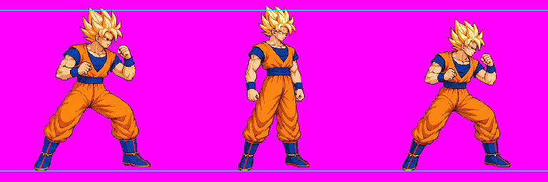

Timed playback and replay
Native 256 × 256 pixel crop
Nearest-neighbor enlargement, 3×
CURRENT-SETTINGS HOLD — current bodyHeight scales the pilot pixels by 0.86463 (guard) and 0.86441 (light2), about 13.5% smaller than the audited native-density fixture. Astra conditionally passed the source method on exact atlas b319f07b217b76f1292eeba0f1559464b6d6104d7091790180bc8db7293abfe8 (metadata b4df0fed72369440395e697d5a78cde9a0487f9c6a443830ad497c92e94cf324): guard v05 bodyHeight 229 and light2 v05 bodyHeight 236, pack factor 1.0. This is not production calibration or art approval; Claude must select and recheck identical production pixels.
Only guard v05 and light2 v05 are included here. Open the full 18-strip reassembly audit gallery. Source images are unchanged. Each display cell is an exact 256×256 crop from a 48-color quantized diagnostic atlas. The contacts place approved idle f0 beside every frame at one displayed density, with guides at idle hair top and y=240.
Current manifest mode: bodyHeight guard 198, light2 204; pack factors 0.86463 and 0.86441. This reproduces the additional shrinkage in current production settings, rendered with isolated warn-only diagnostics after strict refusal.
Native-height mode: fixture-only bodyHeight guard 229, light2 236; pack factor 1.0. This isolates the reassembled source density. These fixture values do not change the production manifest.
Approved comparisons: idle v02; title-style neutral and combat v02. Open exact one-density reference lineup. Original files and hashes are listed in inventory.json and packed-frames.json.
Native 256 × 256 pixel crop
Nearest-neighbor enlargement, 3×

Order: approved idle v02 f0, title-style neutral v02, title-style combat v02. Exact originals and hashes are linked in the inventory.
This pilot audit is scoped only to guard v05 and light2 v05 against approved idle v02 and title-style neutral/combat v02. Older raw-only launched/down/getup records are not part of this audit.